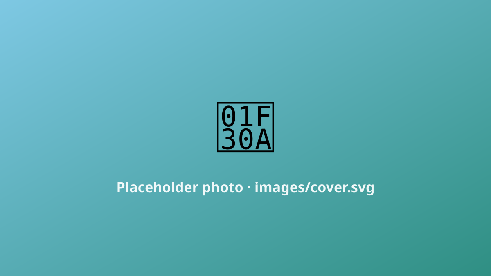

Placeholder ride log
The Shimanami Kaido is the ride that made me fall for Japan on two wheels. It threads six islands across the Seto Inland Sea, hopping one impossibly graceful suspension bridge after another, with a dedicated cycle path the entire way.

images/ folder.The bridges
Each crossing has its own long, gentle ramp that spirals you up to deck height — no stairs, no scramble, just a slow climb with the sea opening up beneath you. The Kurushima-Kaikyo triple bridge at the end is the showstopper.
Where to stop
Ostrich farm, salt ice cream, a dozen tiny harbours. Don't rush it — the whole point is to let the day stretch out. (Full write-up coming; this is a placeholder.)
Would I do it again?
In a heartbeat. It's the friendliest hard-to-beat ride I know: flat enough for anyone, beautiful enough to remember forever.